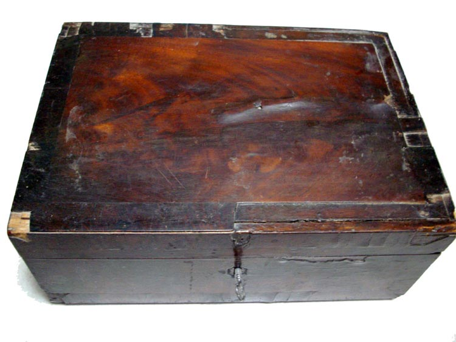

Jacobson/Anderson Family Heirlooms
Home
Histories - - >
Charts
Photos
Maps
Restricted
News
Info
Contact
NOTE: on some of these pictures, you can click once to enlarge and click twice to bring back to the first shown size

The box - the thin outer wood layer is a dark red polished wood, coming loose in a few places. The bottom of the box is also coming loose in one corner.
Opened box.
Opened box with inner compartment removed.
Two lockets found in the box. The one without the chain has a photo in it.
Locket with the photo.
Photo found in the locket (only one side had a photo).
A monogram stencil, apparently made of copper or brass, with the letters M.A., probably for Martha Anderson.
Some of Arvilla's pins.
There were three tintype pictures in the bototm of the box. The wood of the frame of these appears to be of the same wood as the jewelry box.
This one is probably Elizabeth Smith Lovell. It was behind the others in the frame.
This one has written on the back, in pencil: Mary, presumably Elizabeth Smith's sister Mary.
This one has written on the back, in pencil: Sarah, presumably Elizabeth Smith's sister Sarah.
Some small carved wood corners, probably done by Arvilla's grandfather, Ole Hansen Jacobson.